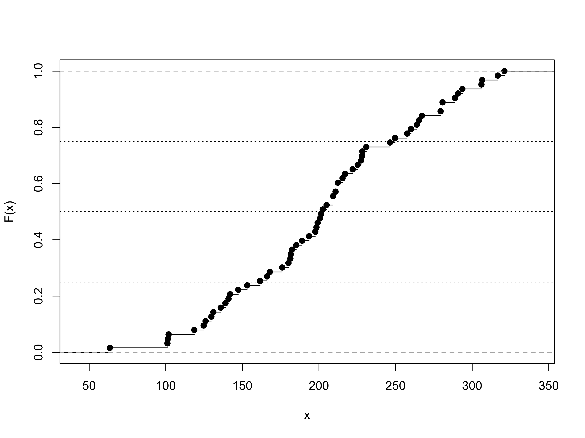
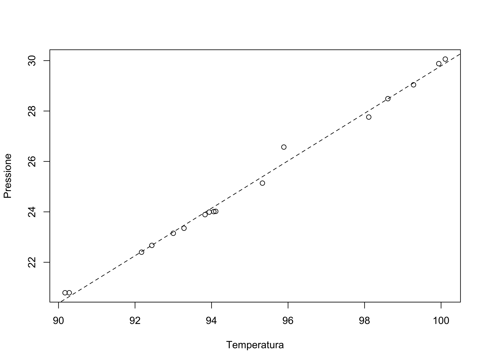

Statistica I
Esame 16 Novembre 2020
Domande preliminari
Le domande preliminari sono omesse.
Esercizio 1
La variabile \(x\) rappresenta la quantità di neve (in cm) che è caduta annualmente nella città di Buffalo, nello stato di New York, U.S.A. tra il 1910 ed il 1972, per un totale di \(n = 63\) anni. La funzione di ripartizione empirica è disegnata nel seguito. Sono inoltre state disegnate delle linee orizzontali in corrispondenza dei valori \(0.25,0.5,0.75\).

Si dia la definizione di mediana e una definizione di quantile\(-p\).
Sulla base del grafico precedente, si ottenga un valore approssimativo per la mediana. Si ottengano inoltre dei valori approssimativi per il primo ed il terzo quartile.
Si ottengano quindi degli indici di variabilità e di asimmetria basati sui valori ottenuti al punto precedente. Si commentino i risultati.
È noto che il massimo ed il minimo sono pari a 321.056 e 63.5, rispettivamente. Si disegni quindi il boxplot utilizzando i valori ottenuti ai punti precedenti. Sono presenti valori anomali?
Si calcoli la percentuale di anni in cui ha nevicato complessivamente più di 250cm.
Esercizio 2
Per \(n = 17\) luoghi nelle Alpi viene misurata la pressione atmosferica (inHg) e la temperatura di ebollizione dell’acqua (in gradi Celsius). I dati provengono da un esperimento condotto da Forbes nel 1857. I dati sono riportati nella seguente tabella.
| Temperatura | Pressione |
|---|---|
| 90.28 | 20.79 |
| 90.17 | 20.79 |
| 92.17 | 22.40 |
| 92.44 | 22.67 |
| 93.00 | 23.15 |
| 93.28 | 23.35 |
| 93.83 | 23.89 |
| 93.94 | 23.99 |
| 94.11 | 24.02 |
| 94.06 | 24.01 |
| 95.33 | 25.14 |
| 95.89 | 26.57 |
| 98.61 | 28.49 |
| 98.11 | 27.76 |
| 99.28 | 29.04 |
| 99.94 | 29.88 |
| 100.11 | 30.06 |
Si disegni un istogramma della variabile
temperatura, scegliendo un numero appropriato di classi equispaziate e giustificandone la scelta.Si ottengano la media aritmetica di entrambe le variabili
temperaturaepressione. La relazione tra gradi Celsius e gradi Fahrenheit è la seguente: \[ (\text{Fahrenheit}) = 32 + \frac{9}{5}(\text{Celsius}). \] Quanto vale la temperatura di ebollizione media espressa in gradi Fahrenheit? Si risponda senza ricalcolare tutti i valori della variabiletemperatura.Si ottenga la varianza delle variabili
temperaturaepressione.Si disegni un opportuno grafico che aiuti a comprendere la relazione tra le due variabili. Si calcoli quindi la correlazione: il valore ottenuto è coerente col grafico?
Si ottenga la retta ai minimi quadrati per la relazione tra
temperatura(variabile esplicativa \(x\)) epressione(variabile risposta \(y\)), e la si disegni nel grafico ottenuto in precedenza. Si fornisca quindi un’interpretazione per i coefficienti.In base al modello stimato, se la temperatura di ebollizione dell’acqua è pari 97 gradi Celsius, a quanto è pari la pressione?
Si ottenga un indice di bontà di adattamento ai dati della curva ottenuta e lo si interpreti nel contesto del problema.
Schema della soluzione
Il grafico richiesto al punto 4 è il seguente:

Esercizio 3
Si considerino le variabili temperatura e pressione presentate nell’esercizio precedente. La teoria fisica suggerisce che la relazione tra queste due variabili sia in realtà di tipo non-lineare. Se come in precedenza \(y\) rappresenta la pressione ed \(x\) la temperatura, allora il modello fisico suggerisce che
\[ y = \gamma\exp\{\lambda x\}, \] dove \(\gamma\) e \(\lambda\) sono due costanti (ignote) positive. È inoltre noto che
\[ \frac{1}{17}\sum_{i=1}^{17} \log{y_i} = 3.2145026, \quad \frac{1}{17}\sum_{i=1}^{17} (\log{y_i})^2 = 10.3463728, \quad \frac{1}{17}\sum_{i=1}^{17} x_i\log{y_i} = 305.6502663. \]
Si ottengano dei valori ragionevoli per \(\gamma\) e \(\lambda\) e se ne fornisca un’interpretazione.
In base al nuovo modello stimato, se la temperatura di ebollizione dell’acqua è pari 97 gradi Celsius, a quanto è pari la pressione? Si confronti tale valore con quello ottenuto nell’esercizio precedente.
Quale dei due modelli (lineare vs non-lineare) è preferibile? Si risponda tramite argomentazioni di tipo qualitativo.
Quali indici confrontereste per verificare quale dei due modelli è preferibile da un punto di vista empirico? Se ne riporti la formula senza calcolarne il valore.